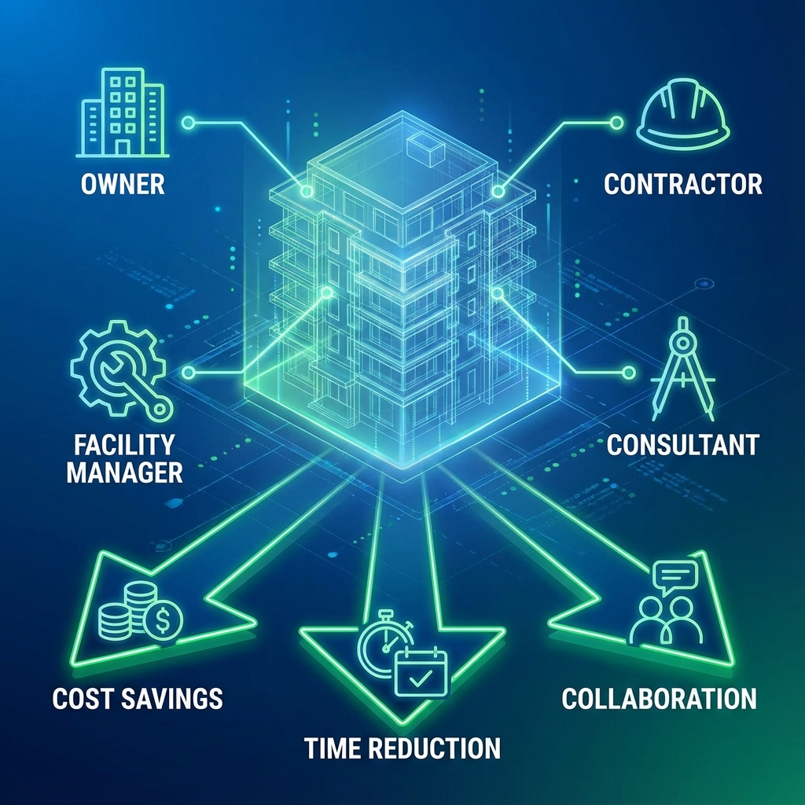

🎯 نظرة عامة
BIM ليس مجرد تقنية للمهندسين - بل هو نظام يُفيد جميع أطراف المشروع. في هذا المقال نستعرض الفوائد الحقيقية لكل طرف.
👔 فوائد BIM للمالك (Owner)
1. تصور أفضل للمشروع
- رؤية واقعية للمشروع قبل البناء
- اتخاذ قرارات مبنية على Visual Simulation
- تقليل المفاجآت أثناء التنفيذ
2. تحكم أفضل في التكلفة
- حصر كميات دقيق من النموذج
- تقدير تكلفة التغييرات فوراً
- مقارنة بدائل التصميم من حيث التكلفة
3. تقليل المخاطر
- اكتشاف مشاكل التعارض مبكراً
- تقليل الـ Claims والنزاعات
- جدول زمني أكثر موثوقية
4. قيمة طويلة المدى
- نموذج As-Built للصيانة
- تخطيط التجديدات المستقبلية
- Digital Twin للمبنى
🏗️ فوائد BIM للمقاول (Contractor)
1. تخطيط أفضل
- 4D Simulation لتسلسل البناء
- تحديد التعارضات قبل الموقع
- تخطيط لوجستي أفضل
2. تقليل الهدر
- حصر دقيق = طلب دقيق للمواد
- Prefabrication من النموذج
- تقليل إعادة العمل
3. كفاءة أعلى
- Shop Drawings من النموذج مباشرة
- تنسيق أفضل بين الباطن
- توثيق أفضل للتغييرات
4. ميزة تنافسية
- الفوز بمشاريع تتطلب BIM
- سمعة أفضل في السوق
- عروض أسعار أكثر دقة
📐 فوائد BIM للاستشاري (Consultant)
1. جودة تصميم أعلى
- اكتشاف مشاكل التصميم مبكراً
- تحليل أداء المبنى
- استكشاف بدائل بسهولة
2. إنتاجية أعلى
- تحديث تلقائي للوحات
- جداول من النموذج مباشرة
- تقليل الأخطاء البشرية
3. تنسيق أفضل
- تكامل التخصصات في نموذج واحد
- Clash Detection تلقائي
- تواصل أفضل مع العميل
🔧 فوائد BIM لمدير المرافق (FM)
- نموذج شامل للمبنى وأنظمته
- خطط صيانة مبنية على البيانات
- تتبع الأصول والمعدات
- تخطيط التجديدات بدقة
📊 إحصائيات عائد الاستثمار (ROI)
| المؤشر | التحسن المتوقع |
|---|---|
| تقليل RFIs | 30-50% |
| تقليل إعادة العمل | 40-60% |
| تحسين الجدول الزمني | 10-20% |
| تقليل تكلفة المشروع | 5-15% |
| تقليل النزاعات | 50-70% |
المقال التالي: تحديات تطبيق BIM وكيفية التغلب عليها